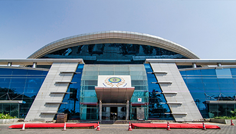

ABOUT NSCI
History
The National Sports Club of India (NSCI) is a sprawling institution right in the centre of the city, overlooking Haji Ali and a beautiful seafront with a posh frontage and lush green turf lawns. NSCI’s long and rich history has always been closely associated with the pre-eminent leaders of a free India. With the foresight required to build a nation that could compete with any other, a great vision was formulated more than just a policy for promoting games and sports in the country, it was about building a community for those that championed the virtues of hard work, fair competition and national pride.
Present
We’ve come a long way from our modest and measured beginnings on the back of a commitment to quality that has never been compromised and a focus that has never wavered. NSCI has always strived to deliver only the best for our esteemed members and it is that vow that has led to the club you see in its current avatar. Today, NSCI is one of the country’s finest institutions in almost every aspect spanning across food and beverage, amenities, conveniences, sports, entertainment and even nightlife!It is our pleasure to serve you, the members, because you are the heart and soul of the club and we are very proud to have the opportunity to do so.